Zoom In: An Introduction to Circuits
By studying the connections between neurons, we can find meaningful algorithms in the weights of neural networks.

By studying the connections between neurons, we can find meaningful algorithms in the weights of neural networks.
Many important transition points in the history of science have been moments when science “zoomed in.” At these points, we develop a visualization or tool that allows us to see the world in a new level of detail, and a new field of science develops to study the world through this lens.
For example, microscopes let us see cells, leading to cellular biology. Science zoomed in. Several techniques including x-ray crystallography let us see DNA, leading to the molecular revolution. Science zoomed in. Atomic theory. Subatomic particles. Neuroscience. Science zoomed in.
These transitions weren’t just a change in precision: they were qualitative changes in what the objects of scientific inquiry are. For example, cellular biology isn’t just more careful zoology. It's a new kind of inquiry that dramatically shifts what we can understand.
The famous examples of this phenomenon happened at a very large scale, but it can also be the more modest shift of a small research community realizing they can now study their topic in a finer grained level of detail.
Just as the early microscope hinted at a new world of cells and microorganisms, visualizations of artificial neural networks have revealed tantalizing hints and glimpses of a rich inner world within our models (e.g.
Most work on interpretability aims to give simple explanations of an entire neural network's behavior. But what if we instead take an approach inspired by neuroscience or cellular biology — an approach of zooming in? What if we treated individual neurons, even individual weights, as being worthy of serious investigation? What if we were willing spend thousands of hours tracing through every neuron and its connections? What kind of picture of neural networks would emerge?
In contrast to the typical picture of neural networks as a black box, we've been surprised how approachable the network is on this scale. Not only do neurons seem understandable (even ones that initially seemed inscrutable), but the "circuits" of connections between them seem to be meaningful algorithms corresponding to facts about the world. You can watch a circle detector be assembled from curves. You can see a dog head be assembled from eyes, snout, fur and tongue. You can observe how a car is composed from wheels and windows. You can even find circuits implementing simple logic: cases where the network implements AND, OR or XOR over high-level visual features.
This introductory essay offers a high-level overview of our thinking and some of the working principles that we’ve found useful in this line of research. In future articles, we and our collaborators will publish detailed explorations of this inner world.
But the truth is that we've only scratched the surface of understanding a single vision model. If these questions resonate with you, you are welcome to join us and our collaborators in the Circuits project, an open scientific collaboration hosted on the Distill slack.
One of the earliest articulations of something approaching modern cell theory was three claims by Theodor Schwann — who you may know for Schwann cells — in 1839:
The first two of these claims are likely familiar, persisting in modern cellular theory. The third is likely not familiar, since it turned out to be horribly wrong.
We believe there’s a lot of value in articulating a strong version of something one may believe to be true, even if it might be false like Schwann’s third claim. In this spirit, we offer three claims about neural networks. They are intended both as empirical claims about the nature of neural networks, and also as normative claims about how it’s useful to understand them.
These claims are deliberately speculative. They also aren't totally novel: claims along the lines of (1) and (3) have been suggested before, as we'll discuss in more depth below.
But we believe these claims are important to consider because, if true, they could form the basis of a new “zoomed in” field of interpretability. In the following sections, we’ll discuss each one individually and present some of the evidence that has led us to believe they might be true.
Features are the fundamental unit of neural networks. They correspond to directions. They can be rigorously studied and understood.
We believe that neural networks consist of meaningful, understandable features. Early layers contain features like edge or curve detectors, while later layers have features like floppy ear detectors or wheel detectors.
The community is divided on whether this is true.
While many researchers treat the existence of meaningful neurons as an almost trivial fact
— there's even a small literature studying them
Of course, being understandable doesn't mean being simple or easily understandable. Many neurons are initially mysterious and don't follow our a priori guesses of what features might exist! However, our experience is that there's usually a simple explanation behind these neurons, and that they're actually doing something quite natural. For example, we were initially confused by high-low frequency detectors (discussed below) but in retrospect, they are simple and elegant.
This introductory essay will only give an overview of a couple examples we think are illustrative, but it will be followed both by deep dives carefully characterizing individual features, and broad overviews sketching out all the features we understand to exist.
We will take our examples from InceptionV1
Regardless of whether we're correct or mistaken about meaningful features, we believe this is an important question for the community to resolve. We hope that introducing several specific carefully explored examples of seemingly understandable features will help advance the dialogue.
Curve detecting neurons can be found in every non-trivial vision model we've carefully examined. These units are interesting because they straddle the boundary between features the community broadly agrees exist (e.g. edge detectors) and features for which there's significant skepticism (e.g. high-level features such as ears, automotives, and faces).
We'll focus on curve detectors in layer mixed3b, an early layer of InceptionV1. These units responded to curved lines and boundaries with a radius of around 60 pixels. They are also slightly additionally excited by perpendicular lines along the boundary of the curve, and prefer the two sides of the curve to be different colors.
Curve detectors are found in families of units, with each member of the family detecting the same curve feature in a different orientation. Together, they jointly span the full range of orientations.
It's important to distinguish curve detectors from other units which may seem superficially similar.
In particular, there are many units which use curves to detect a curved sub-component (e.g. circles, spirals, S-curves, hourglass shape, 3d curvature, ...).
There are also units which respond to curve related shapes like lines or sharp corners.
We do not consider these units to be curve detectors.
But are these "curve detectors" really detecting curves? We will be dedicating an entire future article to exploring this in depth, but the summary is that we think the evidence is quite strong.
We offer seven arguments, outlined below.
It's worth noting that none of these arguments are curve specific: they're a useful, general toolkit for testing our understanding of other features as well.
Several of these arguments — dataset examples, synthetic examples, and tuning curves — are classic methods from visual neuroscience (e.g.
Optimizing the input to cause curve detectors to fire reliably produces curves. This establishes a causal link, since everything in the resulting image was added to cause the neuron to fire more.
You can learn more about feature visualization here.
The ImageNet images that cause these neurons to strongly fire are reliably curves in the expected orientation. The images that cause them to fire moderately are generally less perfect curves or curves off orientation.
Curve detectors respond as expected to a range of synthetic curves images created with varying orientations, curvatures, and backgrounds. They fire only near the expected orientation, and do not fire strongly for straight lines or sharp corners.
If we take dataset examples that cause a neuron to fire and rotate them, they gradually stop firing and the curve detectors in the next orientation begins firing. This shows that they detect rotated versions of the same thing. Together, they tile the full 360 degrees of potential orientations.
By looking at the circuit constructing the curve detectors, we can read a curve detection algorithm off of the weights. We also don’t see anything suggestive of a second alternative cause of firing, although there are many smaller weights we don’t understand the role of.
The downstream clients of curve detectors are features that naturally involve curves (e.g. circles, 3d curvature, spirals…). The curve detectors are used by these clients in the expected manner.
Based on our understanding of how curve detectors are implemented, we can do a cleanroom reimplementation, hand setting all weights to reimplement curve detection. These weights are an understandable curve detection algorithm, and significantly mimic the original curve detectors.
The above arguments don’t fully exclude the possibility of some rare secondary case where curve detectors fire for a different kind of stimulus. But they do seem to establish that (1) curves cause these neurons to fire, (2) each unit responds to curves at different angular orientations, and (3) if there are other stimuli that cause them to fire those stimuli are rare or cause weaker activations. More generally, these arguments seem to meet the evidentiary standards we understand to be used in neuroscience, which has established traditions and institutional knowledge of how to evaluate such claims.
All of these arguments will be explored in detail in the forthcoming articles on curve detectors and curve detection circuits.
Curve detectors are an intuitive type of feature — the kind of feature one might guess exists in neural networks a priori. Given that they're present, it's not surprising we can understand them. But what about features that aren't intuitive? Can we also understand those? We believe so.
High-low frequency detectors are an example of a less intuitive type of feature. We find them in early vision, and once you understand what they're doing, they're quite simple. They look for low-frequency patterns on one side of their receptive field, and high-frequency patterns on the other side. Like curve detectors, high-low frequency detectors are found in families of features that look for the same thing in different orientations.
Why are high-low frequency detectors useful to the network? They seem to be one of several heuristics for detecting the boundaries of objects, especially when the background is out of focus. In future articles, we’ll explore how they’re used in the construction of sophisticated boundary detectors.
(One hope some researchers have for interpretability is that understanding models will be able to teach us better abstractions for thinking about the world
All seven of the techniques we used to interrogate curve neurons can also be used to study high-low frequency neurons with some tweaking — for instance, rendering synthetic high-low frequency examples. Again we believe these arguments collectively provide strong support for the idea that these really are a family of high-low frequency contrast detectors.
Both curve detectors and high-low frequency detectors are low-level visual features, found in the early layers of InceptionV1. What about more complex, high-level features?
Let’s consider this unit which we believe to be a pose-invariant dog detector. As with any neuron, we can create a feature visualization and collect dataset examples. If you look at the feature visualization, the geometry is… not possible, but very informative about what it’s looking for and the dataset examples validate it.
It's worth noting that the combination of feature visualization and dataset examples alone are already quite a strong argument. Feature visualization establishes a causal link, while dataset examples test the neuron's use in practice and whether there are a second type of stimuli that it reacts to. But we can bring all our other approaches to analyzing a neuron to bear again. For example, we can use a 3D model to generate synthetic dog head images from different angles.
At the same time, some of the approaches we've emphasized so far become a lot of effort for these higher-level, more abstract features. Thankfully, our circuit-based arguments — which we'll discuss more soon — will continue to be easy to apply, and give us really powerful tools for understanding and testing high-level features that don't require a lot of effort.
This essay may be giving you an overly rosy picture: perhaps every neuron yields a nice, human-understandable concept if one seriously investigates it?
Alas, this is not the case.
Neural networks often contain “polysemantic neurons” that respond to multiple unrelated inputs.
For example, InceptionV1 contains one neuron that responds to cat faces, fronts of cars, and cat legs.
To be clear, this neuron isn’t responding to some commonality of cars and cat faces. Feature visualization shows us that it’s looking for the eyes and whiskers of a cat, for furry legs, and for shiny fronts of cars — not some subtle shared feature.
We can still study such features, characterizing each different case they fire, and reason about their circuits to some extent.
Despite this, polysemantic neurons are a major challenge for the circuits agenda, significantly limiting our ability to reason about neural networks.
One natural question to ask is why do polysemantic neurons form? In the next section, we'll see that they seem to result from a phenomenon we call "superposition" where a circuit spreads a feature across many neurons, presumably to pack more features into the limited number of neurons it has available.
Features are connected by weights, forming circuits.
These circuits can also be rigorously studied and understood.
All neurons in our network are formed from linear combinations of neurons in the previous layer, followed by ReLU. If we can understand the features in both layers, shouldn't we also be able to understand the connections between them? To explore this, we find it helpful to study circuits: sub-graphs of the network, consisting a set of tightly linked features and the weights between them.
The remarkable thing is how tractable and meaningful these circuits seem to be as objects of study. When we began looking, we expected to find something quite messy. Instead, we’ve found beautiful rich structures, often with symmetry to them. Once you understand what features they’re connecting together, the individual floating point number weights in your neural network become meaningful! You can literally read meaningful algorithms off of the weights.
Let's consider some examples.
In the previous section, we discussed curve detectors, a family of units detecting curves in different angular orientations. In this section, we’ll explore how curve detectors are implemented from earlier features and connect to the rest of the model.
Curve detectors are primarily implemented from earlier, less sophisticated curve detectors and line detectors. These curve detectors are used in the next layer to create 3D geometry and complex shape detectors. Of course, there’s a long tail of smaller connections to other features, but this seems to be the primary story.
For this introduction, we’ll focus on the interaction of the early curve detectors and our full curve detectors.
Let’s focus even more and look at how a single early curve detector connects to sophisticated curve detector in the same orientation.
In this case, our model is implementing a 5x5 convolution, so the weights linking these two neurons are a 5x5 set of weights, which can be positive or negative.
What we see are strong positive weights, arranged in the shape of the curve detector. We can think of this as meaning that, at each point along the curve, our curve detector is looking for a “tangent curve” using the earlier curve detector.
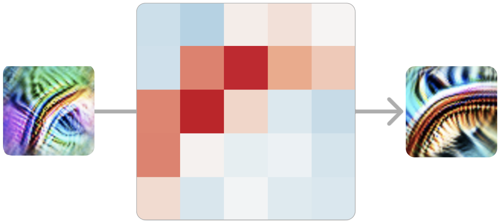
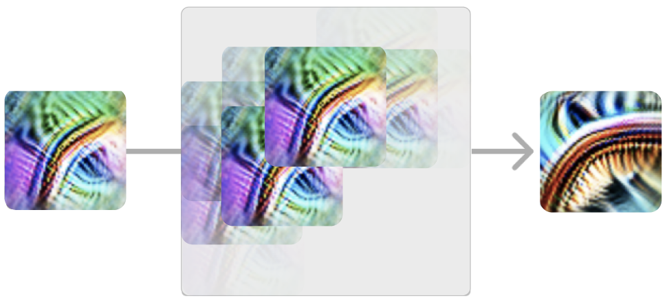
This is true for every pair of early and full curve detectors in similar orientations. At every point along the curve, it detects the curve in a similar orientation. Similarly, curves in the opposite orientation are inhibitory at every point along the curve.
Curve detectors are excited by earlier detectors
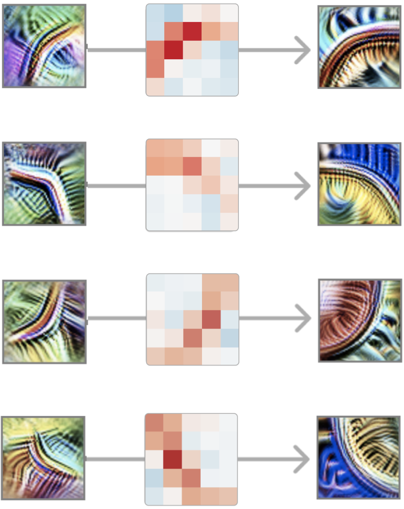
in similar orientations...
... and inhibited by earlier detectors in
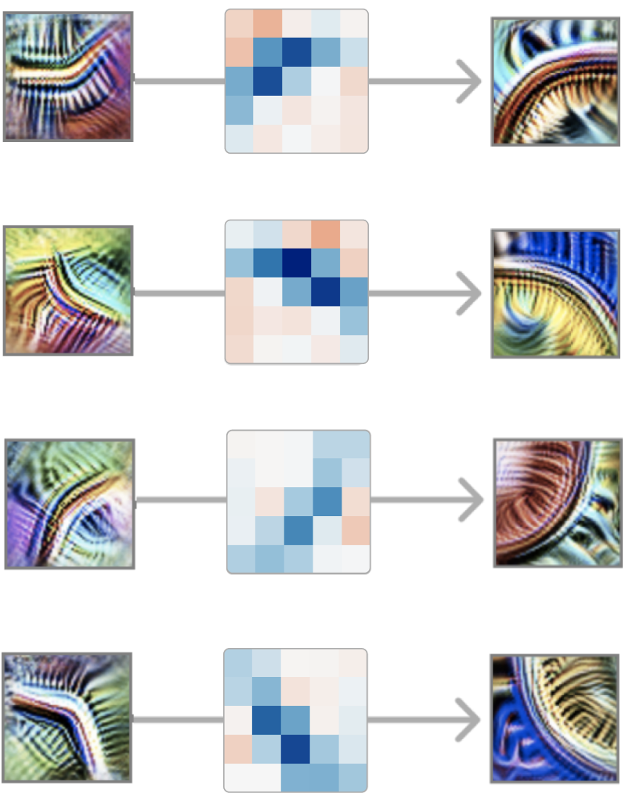
opposing orientations.
It’s worth reflecting here that we’re looking at neural network weights and they’re meaningful.
And the structure gets richer the closer you look. For example, if you look at an early curve detector and full curve detector in similar, but not exactly the same orientation you can often see it have stronger positive weights on the side of the curve it is more aligned with.
It’s also worth noting how the weights rotate with the orientation of the curve detector. The symmetry of the problem is reflected as a symmetry in the weights. We call circuits with exhibiting this phenomenon "equivariant circuits", and will discuss it in a later article.
The curve detector circuit is a low-level circuit and only spans two layers. In this section, we’ll discuss a higher-level circuit spanning across four layers. This circuit will also teach us about how neural networks implement sophisticated invariances.
Remember that a huge part of what an ImageNet model has to do is tell apart different animals. In particular, it has to distinguish between a hundred different species of dogs! And so, unsurprisingly, it develops a large number of neurons dedicated to recognizing dog related features, including heads.
Within this “dog recognition” system, one circuit strikes us as particularly interesting: a collection of neurons that handle dog heads facing to the left and dog heads facing to the right. Over three layers, the network maintains two mirrored pathways, detecting analogous units facing to the left and to the right. At each step, these pathways try to inhibit each other, sharpening the contrast. Finally, it creates invariant neurons which respond to both pathways.
We call this pattern “unioning over cases”. The network separately detects two cases (left and right) and then takes a union over them to create invariant "multifaceted"
This circuit is striking because the network could have easily done something much less sophisticated.
It could easily create invariant neurons by not caring very much about where the eyes, fur and snout went, and just looking for a jumble of them together.
But instead, the network has learned to carve apart the left and right cases and handle them separately. We’re somewhat surprised that gradient descent could learn to do this!
But this summary of the circuit is only scratching the surface of what is going on. Every connection between neurons is a convolution, so we can also look at where an input neuron excites the the next one. And the models tends to be doing what you might have optimistically hoped. For example, consider these “head with neck” units. The head is only detected on the correct side:
The union step is also interesting to look at the details of.
The network doesn't indiscriminately respond to the heads into the two orientations:
the regions of excitation extend from the center in different directions depending on orientaiton, allowing snouts to converge in to the same point.
There’s a lot more to say about this circuit, so we plan to return to it in a future article and analyze it in depth, including testing our theory of the circuit by editing the weights.
In mixed4c, a mid-late layer of InceptionV1, there is a car detecting neuron. Using features from the previous layers, it looks for wheels at the bottom of its convolutional window, and windows at the top.
But then the model does something surprising. Rather than create another pure car detector at the next layer, it spreads its car feature over a number of neurons that seem to primarily be doing something else — in particular, dog detectors.
This circuit suggests that polysemantic neurons are, in some sense, deliberate. That is, you could imagine a world where the process of detecting cars and dogs was deeply intertwined in the model for some reason, and as a result polysemantic neurons were difficult to avoid. But what we’re seeing here is that the model had a “pure neuron” and then mixed it up with other features.
We call this phenomenon superposition.
Why would it do such a thing? We believe superposition allows the model to use fewer neurons, conserving them for more important tasks. As long as cars and dogs don’t co-occur, the model can accurately retrieve the dog feature in a later layer, allowing it to store the feature without dedicating a neuron.
As we've studied circuits throughout InceptionV1 and other models, we've seen the same abstract patterns over and over. Equivariance, as we saw with the curve detectors. Unioning over cases, as we saw with the pose-invariant dog head detector. Superposition, as we saw with the car detector.
In biology, a circuit motif
We think it's quite likely that studying motifs will be important in understanding the circuits of artificial neural networks. In the long run, it may be more important than the study of individual circuits. At the same time, we expect investigations of motifs to be well served by us first building up a solid foundation of well understood circuits first.
Analogous features and circuits form across models and tasks.
It’s a widely accepted fact that the first layer of vision models trained on natural images will learn Gabor filters. Once you accept that there are meaningful features in later layers, would it really be surprising for the same features to also form in layers beyond the first one? And once you believe there are analogous features in multiple layers, wouldn't it be natural for them to connect in the same ways?
Universality (or "convergent learning") of features has been suggested before.
Prior work has shown that different neural networks can develop highly correlated neurons
Ideally, one would like to characterize several features and then rigorously demonstrate that those features — and not just correlated ones — are forming across many models. Then, to further establish that analogous circuits form, one would want to find analogous features over several layers of multiple models and show that the same weight structure forms between them in each model.
Unfortunately, the only evidence we can offer today is anecdotal: we simply have not yet invested enough in the comparative study of features and circuits to give confident answers. With that said, we have observed that a couple low-level features seem to form across a variety of vision model architectures (including AlexNet, InceptionV1, InceptionV3, and residual networks) and in models trained on Places365 instead of ImageNet. We’ve also observed them repeatedly form in vanilla conv nets trained from scratch on ImageNet.
 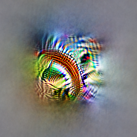
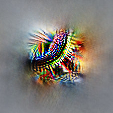
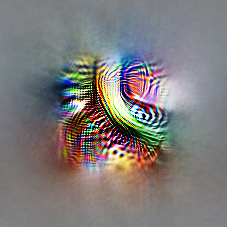
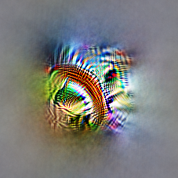
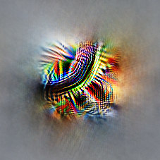
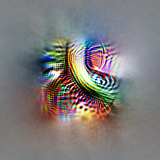
 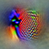
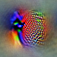


 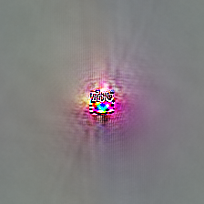
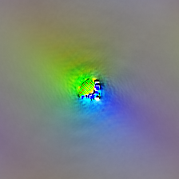
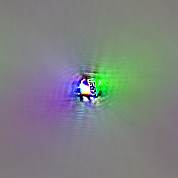
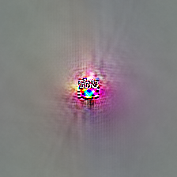
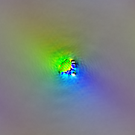
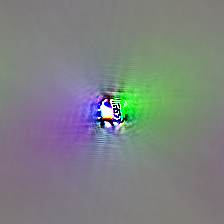
 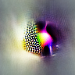
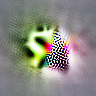
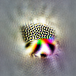
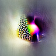
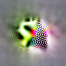
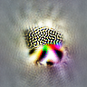
These results have led us to suspect that the universality hypothesis is likely true, but further work will be needed to understand if the apparent universality of some low-level vision features is the exception or the rule.
If it turns out that the universality hypothesis is broadly true in neural networks,
it will be tempting to speculate: might biological neural networks also learn similar features?
Researchers working at the intersection of neuroscience and deep learning have already shown that the units in artificial vision models can useful for modeling biological neurons
Focusing on the study of circuits, is universality really necessary? Unlike the first two claims, it wouldn’t be completely fatal to circuits research if this claim turned out to be false. But it does greatly inform what kind of research makes sense. We introduced circuits as a kind of “cellular biology of deep learning.” But imagine a world where every species had cells with a completely different set of organelles and proteins. Would it still make sense to study cells in general, or would we limit ourselves to the narrow study of a few kinds of particularly important species of cells? Similarly, imagine the study of anatomy in a world where every species of animal had a completely unrelated anatomy: would we seriously study anything other than humans and a couple domestic animals?
In the same way, the universality hypothesis determines what form of circuits research makes sense. If it was true in the strongest sense, one could imagine a kind of “periodic table of visual features” which we observe and catalogue across models. On the other hand, if it was mostly false, we would need to focus on a handful of models of particular societal importance and hope they stop changing every year. There might also be in between worlds, where some lessons transfer between models but others need to be learned from scratch.
The Structure of Scientific Revolutions by Thomas Kuhn
Kuhn's description of pre-paradigmatic fields feel eerily reminiscent of interpretability today.
One particularly challenging aspect of being in a pre-paradigmatic field is that there isn't a shared sense of how to evaluate work in interpretability. There are two common proposals for dealing with this, drawing on the standards of adjacent fields. Some researchers, especially those with a deep learning background, want an “interpretability benchmark” which can evaluate how effective an interpretability method is. Other researchers with an HCI background may wish to evaluate interpretability methods through user studies.
But interpretability could also borrow from a third paradigm: natural science. In this view, neural networks are an object of empirical investigation, perhaps similar to an organism in biology. Such work would try to make empirical claims about a given network, which could be held to the standard of falsifiability.
Why don’t we see more of this kind of evaluation of work in interpretability and visualization?
Circuits side steps these challenges by focusing on tiny subgraphs of a neural network for which rigorous empirical investigation is tractable. They’re very much falsifiable: for example, if you understand a circuit, you should be able to predict what will change if you edit the weights. In fact, for small enough circuits, statements about their behavior become questions of mathematical reasoning. Of course, the cost of this rigor is that statements about circuits are much smaller in scope than overall model behavior. But it seems like, with sufficient effort, statements about model behavior could be broken down into statements about circuits. If so, perhaps circuits could act as a kind of epistemic foundation for interpretability.
We take it for granted that the microscope is an important scientific instrument. It’s practically a symbol of science. But this wasn’t always the case, and microscopes didn’t initially take off as a scientific tool. In fact, they seem to have languished for around fifty years. The turning point was when Robert Hooke published Micrographia
Our impression is that there is some anxiety in the interpretability community that we aren’t taken very seriously. That this research is too qualitative. That it isn't scientific. But the lesson of the microscope and cellular biology is that perhaps this is expected. The discovery of cells was a qualitative research result. That didn't stop it from changing the world.
This essay introduces some new terminology, and also uses some terminology which isn't common. To help, we provide the following glossary:
Circuit - A subgraph of a neural network. Nodes correspond to neurons or directions (linear combinations of neurons). Two nodes have an edge between them if they are in adjacent layers. The edges have weights which are the weights between those neurons (or n1Wn2T if the nodes are linear combinations). For convolutional layers, the weights are 2D matrices representing the weights for different relative positions of the layers.
Circuit Motif -
A recurring, abstract pattern found in circuits, such as equivariance or unioning over cases. Inspired by the use of circuit motifs in systems biology
Client Neuron or Client Feature - A neuron in a later layer which relies on a particular earlier neuron. For example, a circle detector is a client of curve detectors.
Direction -
A linear combination of neurons in a layer. Equivalently, a vector in the representation of a layer. A direction can be an individual neuron (which is a basis direction of the vector space). For intuition about directions as an object, see Building Blocks
Downstream / Upstream - In a later layer / In an earlier layer.
Equivariance - See wikipedia equivariant map.
Family - A set of features found in one layer which detect small variations of the same thing. For example, curve detectors exist in a family detecting curves in different orientations.
Feature - A scalar function of the input. In this essay, neural network features are directions, and often simply individual neurons. We claim such features in neural networks are typically meaningful features which can be rigorously studied (Claim 1).
Meaningful Feature - A feature that genuinely responds to an articulable property of the input, such as the presence of a curve or a floppy ear. Meaningful features may still be noisy or imperfect.
Polysemantic Feature -
A feature that responds to multiple unrelated latent variables, such as the cat/car neuron
Pure Feature - A feature which responds to only a single latent variable. Contrast with polysemantic.
Universal Feature - A feature which reliably forms across different models and tasks.
Representation -
The vector space formed by the activations of all neurons in a layer, with vectors of the form (activation of neuron 1, activation of neuron 2, ...). A representation can be thought of as the collection of all features that exist in a layer. For intuition about representations in vision models, see Activation Atlases
Writing: The text of this essay was primarily written by Christopher Olah, drawing extensively on the research and thinking of the entire Clarity team. Nick Cammarata was deeply involved in developing the framing and revising the final text.
Research: This essay articulates themes that developed as a result of several people’s research into how neural networks implement features. Chris began initial attempts to understand the mechanistic implementations of neurons in terms of their weights in 2018, and developed several tools that enabled this line of work. This work was extended by Gabriel Goh, who discovered the first of what we now call motifs (using negative weights for specialization), in addition to describing the mechanisms behind several neurons. At this point, Nick Cammarata took up this line of research to characterize much larger and deeper circuits, greatly expand the number of neurons we understood mechanistically, and performed detailed, rigorous characterizations of curve detectors. Nick also introduced the connection to Systems biology. Ludwig Schubert performed detailed analysis of high-low frequency detectors. Chris gave research advice and mentorship throughout.
Infrastructure: Michael Petrov, Shan Carter, Ludwig and Nick built a variety of infrastructural tools which made our research possible.
The ideas in this introductory essay were previously presented as a keynote talk by Chris Olah at VISxAI 2019. It was also informally presented at MILA, the Vector Institute, the Redwood Center for Neuroscience, and a private workshop.
All our work understanding InceptionV1 is indebted to Alex Mordvintsev, whose early explorations of vision models paved pathways we still follow. We're deeply grateful to Nick Barry, and Sophia Sanborn for their deep engagement on potential connections between our work and neuroscience, and to Tom McGrath who pointed out the similarities between Kuhn's "pre-paradigmatic science" and the state interpretability as a field to us. The careful comments and criticism of Brice Menard were also invaluable in sharpening this essay.
In addition to Nick and Sophia's deep engagement, we're more generally appreciative of the neuroscience community's engagement with us, especially in sharing hard-won lessons about methodological weaknesses in our work. In particular, we appreciate Brian Wandell pushing us in 2019 on not using tuning curves and the importance of families of neurons, which we think has made our work much stronger. We're also very grateful for the comments and support of Mareike Grotheer, Natalia Bilenko, Bruno Olshausen, Michael Eickenberg, Charles Frye, Philip Sabes, Paul Merolla, James Redd, Thong-Wei Koh, and Ivan Alvarez. We think we have a lot to learn from the neuroscience community and are excited to continue doing so.
One of the privileges of working on circuits has been the open collaboration and feedback in the Distill slack's #circuits channel. We've especially appreciated the detailed feedback we received from Stefan Sietzen, Shahab Bakhtiari, and Flora Liu (Stefan has additionally run with many of these ideas, and we're excited to see his work in future articles in this thread!).
We benefitted greatly from the comments of many people on meta-science and framing questions around this essay, but especially appreciated the comments of Arvind Satyanarayan, Miles Brundage, Amanda Askell, Aaron Courville, and Martin Wattenberg. We're grateful to Taco Cohen, Tess Smidt, and Sara Sabour for their extremely helpful comments on equivariance. We're grateful to Nikita Obidin, Nick Barry, and Chelsea Voss for helpful conversation and references about systems biology and circuit motifs. (Nikita and Nick initially introduced Nick Cammarata to circuit motifs.) Finally, we're grateful for the institutional support of OpenAI, and for the support and comments of all our colleagues and friends across institutions, including Dario Amodei, Daniela Amodei, Jonathan Uesato, Laura Ball, Katarina Slama, Alethea Power, Jacob Hilton, Jacob Steinhardt, Tom Brown, Preetum Nakkiran, Ilya Sutskever, Ryan Lowe, Erin McCloskey, Eli Chen, Fred Hohman, Jason Yosinski, Pallavi Koppol, Reiichrio Nakano, Sam McCandlish, Daniel Dewey, Anna Goldie, Jochen Görtler, Hendrik Strobelt, Ravi Chunduru, Tom White, Roger Grosse, David Duvenaud, Daniel Burkhardt, Jeff Clune, Christian Szegedy, Alec Radford, Alex Ray, Evan Hubinger, Scott Gray, Augustus Odena, Mikhial Pavlov, Jascha Sohl-Dickstein and Kris Sankaran.